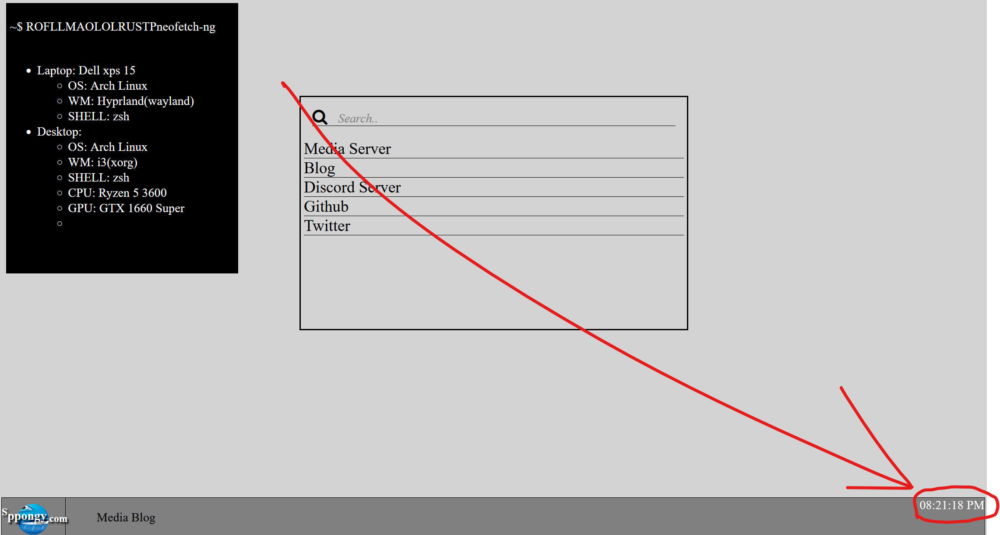

hello my lovely BLOG.deadusb.com squires
and yes you read that right... blog.deadusb.com is now the domain of the BLOG!
biggest thanks to karthin for actually buying it
a big visual change huh? i've finally split up all the posts into seperate pages so it isnt just one huge line of posts
you'll also notice theres actually been 2 blog posts with this update; this one specifically.
its not actually important im just making fun of sppongy
besides that im sorry for taking so long with this new site, there really isnt an excuse other than wanting to use a static site generator to make the process easier
which then made me realize that i wanted to make something myself, which led into impulse deciding to make one myself.
though im not all too sure if i'll actually complete it. i'd like to but i know myself and i likely wont.
cant stop me from talking about it tho
named it Brass and im working on it in Rust. no real reason for any of those, its just what i went with.
basically my plan for it is to translate a markdown file into a blogpost and does all the html for me because i've been writing it all by hand and its getting really tedious but also its still fun cause i like doing it myself. I could use an existing one but thats so much work and even though this is more work whatever I Dont Care!!!!!!
ok thats enough this blog has been essentially done for like a week now and ive just been doing nothing so its time to PUSH!!!!